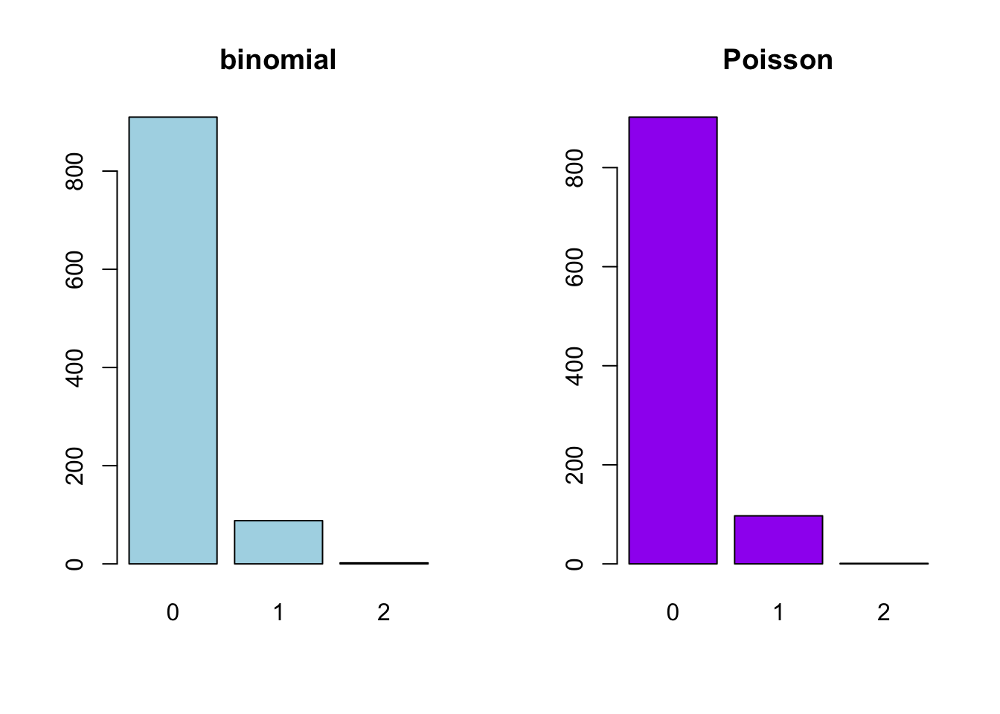

mysim <- sample(1:3, size = 10000,
prob = c(0.2, 0.3, 0.5), replace = TRUE)
mean(mysim)[1] 2.2991Homework is not collected. The quiz based on this homework will be at the beginning of class, Sep 16.
Suppose a random variable \(X\) can take values \(\{1,2,3\}\) according to the probabilities \(\{0.2,0.3,0.5\}\).
sample function, but can only use runif.The mean should be very close to \(0.2+0.3\times2+0.5\times3=2.3\).
mysim <- sample(1:3, size = 10000,
prob = c(0.2, 0.3, 0.5), replace = TRUE)
mean(mysim)[1] 2.2991Suppose \(U\) is a uniform random draw from \((0,1)\). To draw a value \(x\) from the distribution of \(X\):
sim_unif <- runif(10000)
sim_x <- sim_unif
sim_x[sim_unif < 0.2] <- 1
sim_x[sim_unif < 0.5 & sim_unif >= 0.2] <- 2
sim_x[sim_unif >= 0.5] <- 3
mean(sim_x)[1] 2.292There is a \(2\%\) click rate for an online advertisement. The number of people that will click on the advertisement among the next \(100\) people can be modeled by a binomial distribution.
We model it as a binomial distribution with parameters \(n=100\) and \(p=0.02\). There are two assumptions. (1) We assume that each person clicks the advertisement independently of each other; one person’s action does not affect the action of the next person. (2) We assume that each person has the same probability of clicking the advertisement. This may be invalid if different populations have different click probabilities.
dbinom(2, size = 100, prob = 0.02) # P(exactly two)[1] 0.2734139dbinom(0, size = 100, prob = 0.02) # P(no one)[1] 0.1326196pbinom(5, size = 100, prob = 0.02) # P(five or fewer)[1] 0.9845164The number of times you get a 6 if you roll a fair, six-sided die for five times can be modeled by a binomial distribution.
We model it as a binomial distribution with parameters \(n=5\) and \(p=1/6\). We assume (1) each roll is independent of each other and (2) the probability of rolling a 6 is the same for each roll. We can still use a binomial model if the die is biased, as long as the probability of rolling a 6 stays the same.
1 - pbinom(2, size = 5, prob = 1 / 6) # P(more than two 6's)[1] 0.03549383For verifying the above probability:
number_of_sixes <- numeric(10000)
for (simulation in seq_len(10000)) {
one_run <- sample(1:6, size = 5, replace = TRUE)
number_of_sixes[simulation] <- sum(one_run == 6)
}
mean(number_of_sixes > 2)[1] 0.0327A typesetter makes, on average, one mistake per 1000 word. Let \(X\) be the number of mistakes that he makes on a page with \(n\) words.
We can model \(X\) with binomial \((n,p=0.001)\). We assume that whether he makes a mistake on one word is independent from whether he makes mistakes on other words, and that each word has equal probability that he makes a mistake.
dbinom(0, size = 100, prob = 0.001)[1] 0.9047921dbinom(1, size = 100, prob = 0.001)[1] 0.090569781 - dbinom(0, size = 100, prob = 0.001)[1] 0.09520785dbinom(0, size = 200, prob = 0.001)[1] 0.8186488We can also model \(X\) with Poisson \((\lambda=0.001n)\). This is an approximation because the binomial sample space is \(0,1,\ldots,n\), while the Poisson sample space is \(0,1,\ldots,\infty\). We assume independent mistakes and that he makes mistakes at a constant rate. The probabilities are very close to the binomial model.
dpois(0, lambda = 0.1)[1] 0.9048374dpois(1, lambda = 0.1)[1] 0.090483741 - dpois(0, lambda = 0.1)[1] 0.09516258dpois(0, lambda = 0.2)[1] 0.8187308par(mfrow = c(1, 2))
plot(as.factor(rbinom(1000, size = 100, prob = 0.001)),
col = "lightblue", main = "binomial")
plot(as.factor(rpois(1000, lambda = 0.1)),
col = "purple", main = "Poisson")
It is hard to estimate tail probabilities like \(P(X=3,4,\ldots,100)\) using simulation because the probabilities are very small.
Do Question 18 on page 199 in Introduction to Probability.
18. A baker blends 600 raisins and 400 chocolate chips into a dough mix and, from this, makes 500 cookies.
- Find the probability that a randomly picked cookie will have no raisins.
- Find the probability that a randomly picked cookie will have exactly two chocolate chips.
- Find the probability that a randomly chosen cookie will have at least two bits (raisins or chips) in it.
The number of raisins in a randomly picked cookie, \(X\), can be modeled using a Poisson distribution with \(\lambda=600/500\). We can also model \(X\) with a binomial distribution with parameters \(n=600\), \(p=1/500\). The probabilities are very close, but the binomial model is more exact because it has the correct range \(X\in\{0,\ldots,600\}\).
dpois(0, lambda = 6 / 5)[1] 0.3011942dbinom(0, size = 600, prob = 1 / 500)[1] 0.3008325For part (b), use a Poisson model with \(\lambda=400/500\):
dpois(2, lambda = 4 / 5)[1] 0.1437853For part (c), use a Poisson model with \(\lambda=1000/500\):
1 - ppois(1, lambda = 2)[1] 0.5939942Under the setup of Question 26 on page 201 in Introduction to Probability, the number of hits in each of the 576 small areas can be modeled by a Poisson distribution. What is the parameter? Calculate the probabilities that a small area would have 0, 1, 2, 3, 4, and 5 or more hits under the Poisson model, and compare the probabilities to the actual proportions.
26. Feller discusses the statistics of flying bomb hits in an area in the south of London during the Second World War. The area in question was divided into \(24\times24=576\) small areas. The total number of hits was 537. There were 229 squares with 0 hits, 211 with 1 hit, 93 with 2 hits, 35 with 3 hits, 7 with 4 hits, and 1 with 5 or more. Assuming the hits were purely random, use the Poisson approximation to find the probability that a particular square would have exactly \(k\) hits. Compute the expected number of squares that would have 0, 1, 2, 3, 4, and 5 or more hits and compare this with the observed results.
The number of hits can be modeled by a Poisson distribution with \(\lambda=537/576\). Calculation below shows that the Poisson model works very well.
probability <- dpois(0:4, lambda = 537 / 576)
probability <- c(probability, 1 - ppois(4, lambda = 537 / 576))
expected <- 576 * probability
actual <- c(229, 211, 93, 35, 7, 1)
comparison <- cbind(expected, actual)
rownames(comparison) <- c(
"0 hit", "1 hit", "2 hits", "3 hits", "4 hits", "5 or more hits"
)
round(comparison, 1) expected actual
0 hit 226.7 229
1 hit 211.4 211
2 hits 98.5 93
3 hits 30.6 35
4 hits 7.1 7
5 or more hits 1.6 1Suppose that the probabilities of having a male or a female child are both 0.5, and you do not have to consider cases like twins. Calculate the following probabilities using appropriate models.
For parts (a), (b), and (c):
dbinom(1, size = 3, prob = 0.5) # a, exactly 1[1] 0.3751 - dbinom(0, size = 3, prob = 0.5) # a, at least 1[1] 0.875dgeom(2, prob = 0.5) # b[1] 0.125dnbinom(1, size = 2, prob = 0.5) # c[1] 0.25For part (d), let \(M\) be the number of children. The number of daughters, \(X\), can be modeled by a binomial distribution with parameters \(n=M\) and \(p=0.5\). We want \(P(X\ge1)=1-P(X=0)\) to be greater than \(95\%\). We calculate this probability for different values of \(M\); \(M=5\) is the smallest number of children that satisfies the condition.
1 - pbinom(0, size = 1:10, prob = 0.5)